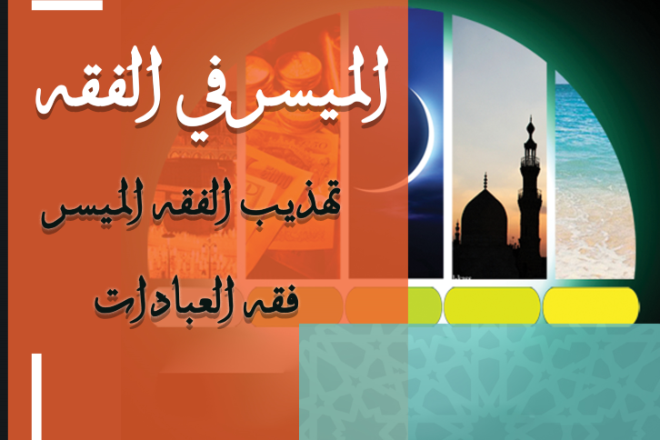

البرنامج يتضمن دراسة المتون الآتية بالترتيب الآتي
👇🏼👇🏼👇🏼
يحصل من يجتاز البرنامج على شهادة إكمال لجميع البرنامج بالإضافة إالى إجازة وشهادة في كل كل متن من هذه المتون
وكل ما سبق بشرح فضيلة الشيخ صالح بن عبد الله العصيمي
مدة البرنامج خمسة شهور
شرط الاشتراك
{{الجدية في طلب العلم}}
اضغط للاشتراك بقناة التلغرام